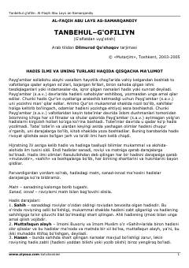

TGMo'minlarni g'aflatdan uyg'otuvchi va ibodatga chorlovchi qimmatli pand-nasihatlar to'plami.
Ushbu asar mashhur faqih va olim Abu Lays as-Samarqandiy tomonidan yozilgan bo'lib, unda turli diniy mavzular, hadislar va pand-nasihatlar jamlangan. Kitob mo'minlarni g'aflatdan uyg'otish, ibodatga rag'batlantirish va axloqiy fazilatlarni shakllantirishga qaratilgan.